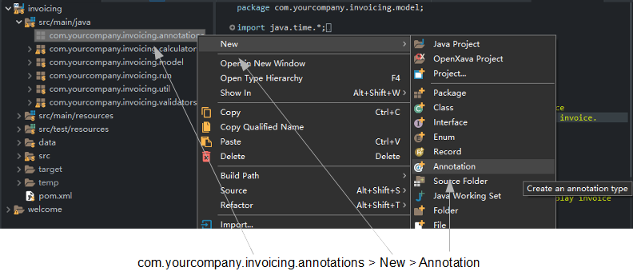
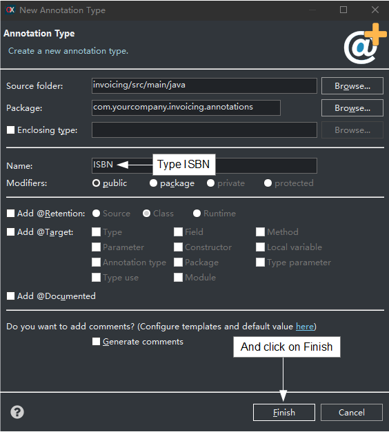
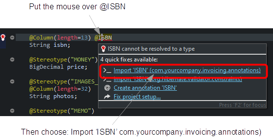

openxava
/ documentation /
Lesson 21: Custom Bean Validation annotation
Course:
1.
Getting started |
2.
Basic domain model (1) |
3.
Basic domain model (2) |
4.
Refining the user interface |
5.
Agile development |
6.
Mapped superclass inheritance |
7.
Entity inheritance |
8.
View inheritance |
9.
Java properties |
10.
Calculated properties |
11.
@DefaultValueCalculator in collections |
12.
@Calculation and collections totals |
13.
@DefaultValueCalculator from file |
14.
Manual schema evolution |
15.
Multi user default value calculation |
16.
Synchronize persistent and computed propierties |
17. Logic from database |
18.
Validating with @EntityValidator |
19.
Validation alternatives |
20.
Validation on remove |
21: Custom Bean Validation
annotation |
22.
REST service call from validation |
23.
Attributes in annotations |
24.
Refining the standard behavior |
25.
Behavior & business logic |
26.
References & collections |
A.
Architecture & philosophy |
B.
Java Persistence API |
C.
Annotations |
D.
Automated testing
In the last lesson you saw how to validate on remove. In this lesson you
are going to see how to create your custom Bean Validation annotation.
Creating
your own Bean Validation annotation
The techniques in the previous section are very useful for many
validations. Nevertheless, sometimes you will face some validations that
are very generic and you will want to reuse them over and over again. In
this case to define your own
Bean Validation annotation can be a
good option. Defining a
Bean Validation is more verbose but
usage and reuse is simple; just adding an annotation to your property or
class.
We are going to learn how to create a validator from
Bean Validation.
Using
a Bean Validation from your entity
It is very easy. Just annotate your property, as you see in the next code:
@ISBN // This annotation indicates this property must be validated as an ISBN
String isbn;
By merely adding
@ISBN to your property, it will be
validated before the entity is saved into the database. Great! The problem
is that
@ISBN is not included as a built-in constraint in the
Bean Validation framework. This is not a big deal. If you want an
@ISBN
annotation, just create it. Indeed, we are going to create the
@ISBN
validation annotation in this section.
First of all, let's add a new
isbn property to
Product.
Edit your
Product class and add to it the code bellow:
@Column(length=13)
String isbn;
Try out your
Product module with the browser. Yes, the
isbn
property is already there. Now, you can add the validation.
Defining
your own ISBN annotation
Let's create the
@ISBN annotation. First, create a package in
your project called
com.yourcompany.invoicing.annotations. Then
click with the right mouse button on it and choose
New > Annotation,
as following:

It will show a dialog, type ISBN
for the annotation name and click on Finish:

Edit the code of your recently
created ISBN annotation and leave it as in the next code:
package com.yourcompany.invoicing.annotations; // In 'annotations' package
import java.lang.annotation.*;
import javax.validation.*;
@Constraint(validatedBy = com.yourcompany.invoicing.validators.ISBNValidator.class)
@Target({ElementType.FIELD, ElementType.METHOD})
@Retention(RetentionPolicy.RUNTIME)
public @interface ISBN { // A regular Java annotation definition
Class<?>[] groups() default{};
Class<? extends Payload>[] payload() default{};
String message() default "isbn_invalid"; // Message id from i18n file
}
As you can see, this is a regular annotation definition. The
message
attribute is the message to show to the user if the validation fails, you
can write the message "as is" or put an i18n id. The developer can specify
its own message when he uses the annotation, although we provide one by
default, "isbn_invalid", so we have to add the next entry into
Invoicing-messages_en.properties:
isbn_invalid=ISBN invalid or nonexistent
The
@Constraint indicates
the class with the validation logic. Let's write the
ISBNValidator
class.
Using
Apache Commons Validator to implement the validation logic
We are going to write the
ISBNValidator class with the
validation logic for an ISBN. Instead of writing the ISBN validation logic
by ourselves we'll use the
Commons
Validator project from Apache. Commons Validator contains validation
algorithms for email addresses, dates, URLs and so on. The
commons-validator.jar
is included by default in OpenXava projects, so you can use it without
further configuration. The code for
ISBNValidator:
package com.yourcompany.invoicing.validators; // In 'validators' package
import javax.validation.*;
import com.yourcompany.invoicing.annotations.*;
import org.openxava.util.*;
public class ISBNValidator
implements ConstraintValidator<ISBN, Object> { // Must implement ConstraintValidator
private static org.apache.commons.validator.routines.ISBNValidator
validator = // From 'Commons Validator' framework
new org.apache.commons.validator.routines.ISBNValidator();
public void initialize(ISBN isbn) {
}
// Contains the validation logic
public boolean isValid(Object value, ConstraintValidatorContext context) {
if (Is.empty(value)) return true;
return validator.isValid(value.toString()); // Relies on 'Commons Validator'
}
}
As you see, the validator class must implement
ConstraintValidator
from the
javax.validation package. This forces your validator to
implement
initialize() and
isValid(). The
isValid()
method contains the validation logic. Note that if the value to validate
is empty we assume that it is valid. Validating when the value is present
is the responsibility of other annotations like
@Required.
In this case the validation logic is plain vanilla, because we only call
the ISBN validator from the Apache Commons Validator project.
@ISBN is ready to be
used. Just annotate your isbn property with it. You can see how:
@Column(length=13) @ISBN
String isbn;
In this case when you save the class the import for
@ISBN
is not added automatically. This is because there is another
@ISBN
available (from Hibernate Validator library included in OpenXava), so
OpenXava Studio does not know which one to choose. Don't worry, just put
your mouse over the
@ISBN annotation and a popup will be shown
with several possible solutions, choose
Import 'ISBN'
(com.yourcompany.invoicing.annotations) so the correct import will
be added to
Product class:

Now, you can test your module,
and verify that the ISBN values you enter are validated correctly.
Congratulations, you have written your first Bean Validation.
It's not so difficult. One annotation, one class.
This @ISBN is good enough for use in real life. Nevertheless,
we'll try to improve it, simply to have the chance to experiment with a
few interesting possibilities.
Summary
Congratulations! You have learned how to create your own
Bean
Validation annotation. In the next lesson you are going to learn
how to call a REST service from a validation.